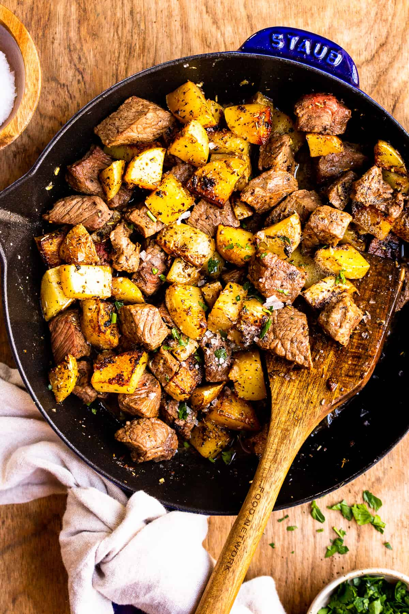

Classic Steak and Potatoes

Description
An easy to make dish with a combo thats a match made in heaven. The juicy tender steak, and the crisp potatoes with their skin make this a guaranteed hit at the dinner table.
Ingredients
- 1 1/2 lb (650g) flank steak, sliced against the grain
- 1 1/2 lb (650g) baby yellow potatoes, quartered
- 1 tablespoon olive oil
- 3 tablespoons butter, divided
- 1 teaspoon fresh thyme, chopped
- 1 teaspoon fresh rosemary, chopped
- 1 teaspoon fresh oregano, chopped
- Salt and fresh cracked pepper
- Crushed red chili pepper flakes, optional
Process
- To prepare the garlic butter steak recipe with potatoes wedges: In a large bowl, combine the steak strips with soy sauce, olive oil, pepper, and hot sauce. Set aside and allow steak strips to marinate while you cook potatoes.
- In a large skillet over medium-high heat, mix 1 tablespoon olive oil and 1 tablespoon butter. When butter is melted, add potatoes wedges. Cook for about 4 minutes, stir and cook an additional 4-5 minutes until potatoes wedges are golden and fork-tender. Transfer sauteed potatoes to a plate and set aside.
- Keep the same skillet over medium heat and add remaining 2 tablespoons butter, garlic, red chili pepper flakes, and fresh herbs. Lay the steak strips in one layer in the skillet, keeping the drained steak marinade for later. Cook the steak strips on each side for 1 minute each, until nicely browned – adjust timing depending on how you like your steak.
- Right before the Garlic Butter steak is done, you can stir in the reserved marinade if you like, and cook for one minute. Add the potatoes wedges back to the garlic butter steak pan and heat through. Adjust seasoning with salt and pepper if necessary.
- Remove from heat and serve immediately your steak and potatoes, garnished with more crushed chili pepper, fresh herbs, and a sprinkle of parmesan cheese over the potatoes if you like. Enjoy!
Return to homepage